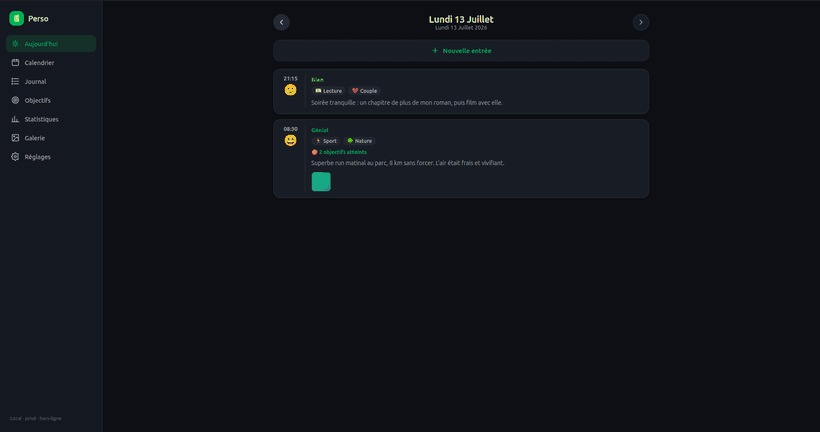
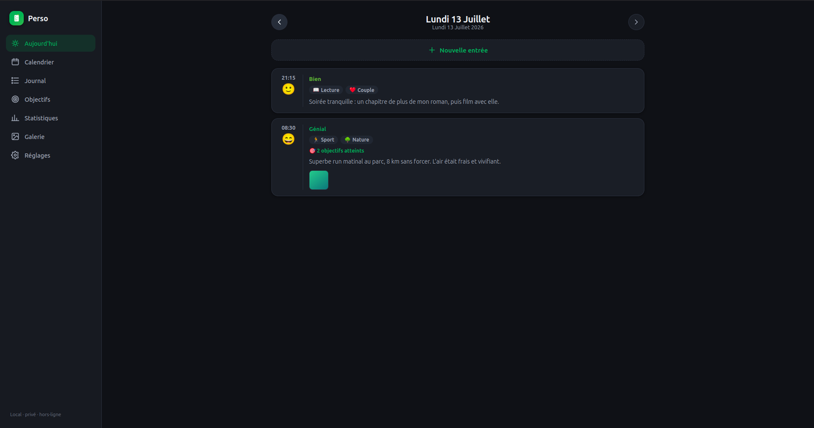
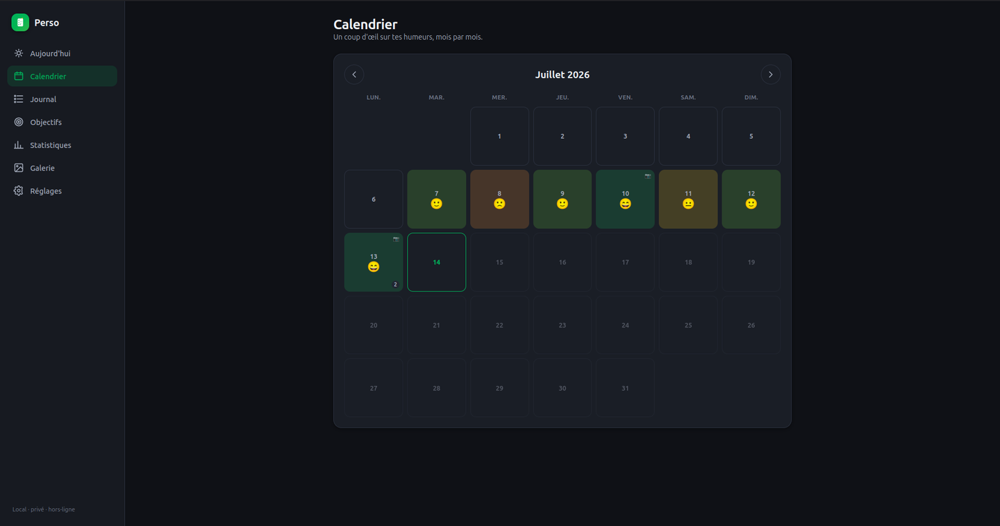
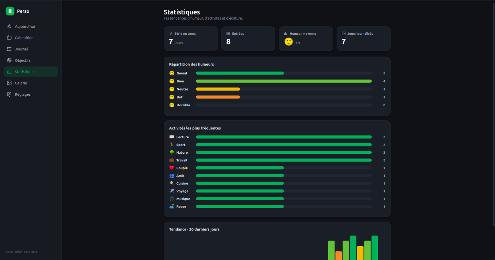
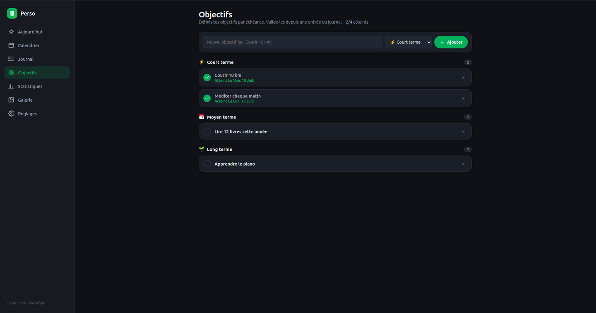
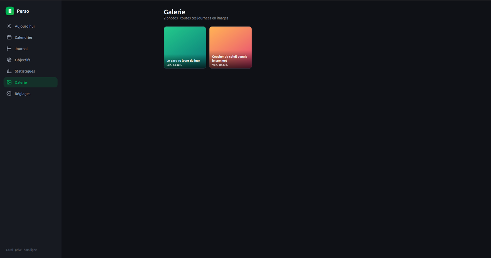

Ton journal intime local, privé et chiffré — humeurs, activités, objectifs et photos.
Gratuit · open-source · aucun compte · aucune donnée envoyée. Inspiré de Daily You.
Windows (.exe) · Linux (AppImage) · interface FR / EN

Un vrai journal de bord au quotidien, façon Daylio — mais chez toi et chiffré.
Plusieurs entrées par jour, chacune avec une humeur (5 niveaux) et des tags d'activité.
Des objectifs court / moyen / long terme, que tu valides depuis tes entrées.
Ajoute des photos avec légende ; retrouve-les dans une galerie dédiée.
Mot de passe obligatoire et chiffrement AES-256-GCM au repos. Tes fichiers restent illisibles sans ton mot de passe.
Séries, humeur moyenne, répartition et tendances sur 30 jours.
Autant de journaux séparés que tu veux, chacun avec son mot de passe.
Mise en forme façon traitement de texte, stockée en Markdown lisible.
Export/import de tes données. Elles restent de simples fichiers chez toi.
Sombre ou clair, avec la couleur d'accent de ton choix.




